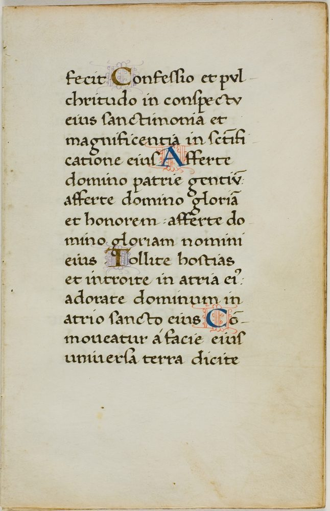

Our Charter
An affidavit of what we hold
We, the people of Maspor, do affirm and set down what we believe. We set it down as a claim and not as a preference, because a claim can be tested and a preference cannot. What follows is the whole of it — the thing affirmed, the witnesses produced, and the showing that those witnesses are competent to testify.
¶ 1
The thing affirmed
We affirm that the King James (Authorized) Version is the infallible word of God in the English tongue. Not a translation of a translation, and not a summary of something older — the word itself, given by inspiration, pure in every word, and standing when everything else has gone. We do not revise it. We do not improve it. We hand it on.
That is the claim. Everything after this paragraph exists to support it, and if any part of the support fails, we would rather be corrected than comforted.
¶ 2
The witnesses produced

The Book is its own witness to this, and it speaks in its own words. We produce it whole, we do not add to it, and we take none of it out. Each of the following is a witness that the text is what we say it is.
“All scripture [is] given by inspiration of God, and [is] profitable for doctrine, for reproof, for correction, for instruction in righteousness.”
2 Timothy 3:16
“The words of the LORD [are] pure words: [as] silver tried in a furnace of earth, purified seven times.”
Psalm 12:6
“Thou shalt keep them, O LORD, thou shalt preserve them from this generation for ever.”
Psalm 12:7
“Every word of God [is] pure: he [is] a shield unto them that put their trust in him.”
Proverbs 30:5
“Thy word [is] true from the beginning: and every one of thy righteous judgments [endureth] for ever.”
Psalm 119:160
“Heaven and earth shall pass away, but my words shall not pass away.”
Matthew 24:35
Six witnesses, and not one of them ours. They are quoted as they stand.
¶ 3
That the witnesses are competent
A witness is worth exactly what its competence is worth, and a claim proved by an incompetent witness is no claim at all. We do not assume our own witnesses are good. We show four things about them, and a reader who is not satisfied with any one of the four has only to reject this affidavit.
(a) They speak for the Author
They are not witnesses to the Book from outside it. They are the Book's own testimony, and they name their author: all scripture is given by inspiration of God (2 Timothy 3:16). We are not asking anyone to take our word, or a council's word, or a tradition's word. We are asking them to hear the Author describe his own handiwork.
(b) They meet the standard the Book itself sets
The Book legislates evidence, and we do not appeal above its own rule. One witness shall not establish a matter; two or three shall. Against that standard we offer six, and they are not six of a kind — they speak from different books, centuries apart, on different subjects, and none of them was written to flatter us.
“One witness shall not rise up against a man for any iniquity, or for any sin, in any sin that he sinneth: at the mouth of two witnesses, or at the mouth of three witnesses, shall the matter be established.”
Deuteronomy 19:15
(c) They can be produced, and tested, by anyone
An exhibit that cannot be produced at the hearing is worth very little. This one can be. The King James text is printed, published, out of copyright, and searchable word by word, clause by clause, by any person who wants to check us — and we have gone further than that. We have put our own counting tool into the public and free, so that the figures we print further down this page are not figures you have to take on our word. There is no keeper of the original who issues summaries to the few. The original is the text, and it is in your hand.
(d) The test is the word, and it addresses the reader
We do not submit to a standard we chose. To the law and to the testimony: if they speak not according to this word, it is because there is no light in them. That is the standard we are held to, and we accept it. And the Book does not leave the reader a bystander — it addresses him directly, and tells him he knows.
“To the law and to the testimony: if they speak not according to this word, [it] [is] because [there] [is] no light in them.”
Isaiah 8:20
“But ye have an unction from the Holy One, and ye know all things.”
1 John 2:20
If the witnesses are competent, the claim stands. We think they are. It is not our confidence that carries it — it is theirs.
¶ 4
There is but one Lawgiver, and his law stands
We further affirm that every throne, and every law made by men, answers to a single authority. He who created all things alone has the right to make law, and having made it, he alone upholds it. There is no second lawgiver — not in heaven, and not upon any throne among men. And his law is not an idea, nor a counsel, nor one rule among many: it is his own word, given by inspiration, unalterable, and the standard by which every other claim to authority is measured.
“Ye shall not add unto the word which I command you, neither shall ye diminish [ought] from it, that ye may keep the commandments of the LORD your God which I command you.”
Deuteronomy 4:2
“Think not that I am come to destroy the law, or the prophets: I am not come to destroy, but to fulfil.”
Matthew 5:17
“For verily I say unto you, Till heaven and earth pass, one jot or one tittle shall in no wise pass from the law, till all be fulfilled.”
Matthew 5:18
“If ye fulfil the royal law according to the scripture, Thou shalt love thy neighbour as thyself, ye do well:”
James 2:8
“And his commandments are not grievous.”
1 John 5:3
¶ 5
We confess Jesus Christ, who made all things
We further affirm, and set down the Person in whom all the above is summed up. He is not a visitor holding a borrowed seat. Everything that was made was made by him and for him, and it is he who holds all things together this hour — not by a decision he once took and then handed to another, but by the word of his power, which never tires and never has to be renewed. We confess him as Lord, and we hand our lives to him.
“For by him were all things created, that are in heaven, and that are in earth, visible and invisible, whether [they be] thrones, or dominions, or principalities, or powers: all things were created by him, and for him: And he is before all things, and by him all things consist.”
Colossians 1:16–17
“And Jesus came and spake unto them, saying, All power is given unto me in heaven and in earth:”
Matthew 28:18
“Behold, [one] like the Son of man came with the clouds of heaven, and came to the Ancient of days:… And to him was given dominion and glory and honour, and all people, nations, and languages, should serve him: his dominion [is] an everlasting dominion, which shall not pass away, and his kingdom [that] which shall not be destroyed.”
Daniel 7:13–14
The signatures in the text
Numbered by seven
The King James Bible is not only pure in its words; it is exact in its numbers. Counted through the whole text, many a phrase falls on an exact multiple of seven, and the totals answer to one another the way a seal answers to its impression. We set a few of them down below — not as the reason we believe the Book, but as marks within a Book we already believe. The Scripture stands on its own word; these are stars set round about it.
| In the text | Occurrences | The signature |
|---|---|---|
| All the words of the book | 823,543 | 7×7×7×7×7×7×7 |
| “LORD” (the covenant name) | 6,391 | 913 × 7 |
| “saith the LORD” | 854 | 122 × 7 |
| “Lord” | 1,211 | 173 × 7 |
| “grace,” “mercy,” and “peace” together | 875 | 125 × 7 |
| “The Father,” “Holy Ghost,” and “The Word” | 777 | 111 × 7 |
| “Son of man” | 196 | 28 × 7 |
| “Jesus Christ” | 196 | 28 × 7 |
| “call” | 196 | 28 × 7 |
| “Verily I say unto” | 77 | 11 × 7 |
| “repent,” every form | 112 | 16 × 7 |
| “forgive,” every form | 112 | 16 × 7 |
| “tribes” | 112 | 16 × 7 |
| “flesh and blood,” in the same verse | 28 | 4 × 7 |
| “love,” in the Gospels alone | 51 | 3 × 17 |
| “cross” and “tree,” in the Gospels alone | 49 | 7 × 7 |
| “crucified” | 37 | in 37 verses |
| “beloved” | 111 | 3 × 37 |
| “hearken” | 153 | the 153 fishes of John 21:11 |
| “Holy Spirit” | 7 | seven, and no more |
The psalmist said it first, and said it best: the words of the LORD are “as silver tried in a furnace of earth, purified seven times” (Psalm 12:6). We do not count in order to believe; we believe, and so we count.
Do not take our word for it
Check every figure yourself
Every number in that table is a count of the text — not a claim about the text. None of it asks you to believe anything you have not already read. It asks you to run one command and get the same answer we got. A figure on this page that will not reproduce is a fault in the figure, and we would far rather you found that than took our word for it.
We wrote purebible for exactly this. It is free and open-source (GPL-3.0-or-later), it runs in your terminal, it has no dependencies and makes no network calls, and the King James text it counts is bundled inside it. The counting happens against the book itself, on your machine, where nobody can adjust the answer.
pipx install purebible
purebible --count -c "LORD"
6391
purebible --count "saith the LORD"
854
purebible --count "Son of man"
196
purebible --count "Jesus Christ"
196
purebible --count "hearken"
153
purebible --count --gospels "love"
51
purebible --count "Holy Spirit"
7
purebible --count 'flesh* & blood*'
28
Every line above was run against the shipped 1769 text before this page was written, and
every one returns the figure printed in the table. & means both terms in
the same verse; * matches any ending; -c makes the search
case-sensitive, which is how “LORD” is told apart from “Lord”. The
full text is at github.com/ripekern/purebible-py.
If you would rather not install anything, King James Pure Bible Search will give you the same counts in a browser. But we would point out that the tool is ours and the Book is not, and the reason to count it yourself is that you should never have to take either of our word for it.
A number is not an argument. The Book stands on its own word; these are stars set round about it, and any one of them may be checked and thrown away.
The closing
We hold these, and we hold them fast
None of this is new, and none of it is our own invention. We neither add to the word of God nor take from it; our part is to keep it — to hold fast the form of sound words in faith and love, and to contend earnestly for a truth that was given to us, not devised by us. What we received we did not invent, and what we hand on we will not alter.
“Hold fast the form of sound words, which thou hast heard of me, in faith and love which is in Christ Jesus.”
2 Timothy 1:13
“Beloved, when I gave all diligence to write unto you of the common salvation, it was needful for me to write unto you, and exhort [you] that ye should earnestly contend for the faith which was once delivered unto the saints.”
Jude 1:3
And we say plainly what this instrument is for. It binds both sides. It gives far more than it asks, and it asks something real: that those who come under it live by it. The man who reads the promises and refuses the terms has not found a loophole in the affidavit — he has never come under it at all.
Duly affirmed
We, the people of Maspor, affirm the foregoing as true, and we hold ourselves to it.
Questions on Our Charter
Why do you quote only the King James Bible?
Because we hold it to be the infallible, preserved word of God in English, given by inspiration (2 Timothy 3:16) and preserved from this generation (Psalm 12:7). It is our standard for doctrine and practice, and we would rather quote it slowly than paraphrase it quickly.
What authority does it have over us?
Full authority. It stands over every doctrine, every council, and every claim of men. Nothing may be added to it and nothing diminished from it (Deuteronomy 4:2), and heaven and earth shall pass away before one word of it does (Matthew 24:35).
Are we saved by good works?
No. “For by grace are ye saved through faith; and that not of yourselves: it is the gift of God: not of works, lest any man should boast.” (Ephesians 2:8–9) “Neither is there salvation in any other” (Acts 4:12). But do not read that as meaning fruit does not matter — good works are the evidence of belonging, and Christ is explicit about those who never had any.
Are we under the law, or under grace alone?
Grace saves us; the law still governs us. Paul means that no man can earn salvation by keeping the law. But the one who keeps it is the one the Lawgiver sent, and he said he was not come to destroy the law but to fulfil it (Matthew 5:17). His law is the royal law, and it is not grievous (1 John 5:3).
Do you add anything of your own to the faith?
No. We hold the faith once delivered to the saints and we contend for it (Jude 1:3). If you find anything on this site that contradicts the Word, the Word stands and our page is wrong. Tell us, and we will take it down.